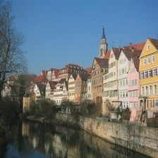

Case - Neural Style Transfer
Neural Style Transfer
What is Neural Style Transfer (NST)? It is a pretty cool application of Deep Neural Networks (DNN), “the process of using DNN to migrate the semantic content of one image to different styles”.
Well it may sounds a little bit scary, but the idea is very simple, as the title image shows, this application takes two images A and B as input. Let’s say A is “Mona Lisa” of Da Vinci, and B is “The Starry Night” of Vincent van Gogh.
We then specify A as the content image and B as the style image, then what a NST application can produce? Boom! A new Mona Lisa, but with the style of Van Gogh (see the middle of title image)! If you want another style, just replace image B and run the application again. Impressionism, abstractionism, classical art, you name it.
The figure below illustrate this point (src). You can apply different art styles to the same “Mona Lisa”, or apply the same “Starry Sky” style to any pictures, even a normal daily street view. Isn’t it amazing?
A Very Brief Theory of NST
Without going into details, I will briefly introduce the math behind NST, so please feel free to ignore this part. Refer to the original paper for more details if you are interested.
The NST can be seen as an optimisation problem: given a content image c and a style image s , the target is to get an output image x so that it minimises: \[ f(x) = \textrm{content_distance}(x, c) + \textrm{style_distance}(x, s) \]
This equation can be easily translated as: I want to get such an image that its content is close to c , but its style similar to s .
DNNs, especially the ones that are used for computer vision tasks, are found to be an convenient tool to capture the content and style characteristics of an image (details emitted here for now). Then the euclidean distance of these characteristics are used to express the content_distance() and style_distance() functions. Finally, the optimisation techniques such as gradient descent are applied to f(x) to get a good enough x .
NST with Owl
I’ve implement an NST application with Owl. All the code (about 180 lines) is included in this Gist. This application uses the VGG19 network structure to capture the content and style characteristics of images. The pre-trained network file is also included. It relies on ImageMagick to manipulate image format conversion and resizing. Please make sure it is installed before running.
This application provides a simple interfaces to use. Here is an example showing how to use it with two lines of code:
#zoo "6f28d54e69d1a19c1819f52c5b16c1a1"
Neural_transfer.run
~ckpt:50
~src:"path/to/content_img.jpg"
~style:"path/to/style_img.jpg"
~dst:"path/to/output_img.png" 250.;;The first line download gist files and imported this gist as an OCaml module, and the second line uses the run function to produce an output image to your designated path. It’s syntax is quite straightforward, and you may only need to note the final parameter. It specifies how many iterations the optimisation algorithm runs. Normally 100 ~ 500 iterations is good enough.
This module also supports saving the intermediate images to the same directory as output image every N iterations (e.g. path/to/output_img_N.png). N is specified by the ckpt parameter, and its default value is 50 iterations. If users are already happy with the intermediate results, they can terminate the program without waiting for the final output image.
That’s all it takes! If you don’t have suitable input images at hand, the gist already contains exemplar content and style images to get you started. I have to say I had a lot lot of fun playing with it – please allow me to introduce you one of my work using the exemplar images:

Here is a presentation of how the content image change gradually in style:

More examples can be seen on our demo page.
Fast Style Transfer
One disadvantage of NST is that it could take a very long time to rendering an image, and if you want to change to another content or style image, then you have to wait a long time for the training again. If you want to render some of your best (or worst) selfies fast and send to your friends, NST is perhaps not a perfect choice.
This problem then leads to another application: Fast Neural Style Transfer (FST). FST sacrifice certain degrees of flexibility, which is that you cannot choose style images at will. But as a result, you only need to feed your content image to a DNN, finish an inference pass, and then the output will be the rendered styled image as you expected! The best part is that, one inference pass is much much faster that keep running a training phase.
Based on the TensorFlow implementation, we have implemented a FST application in Owl, and it’s not complicated. Here is the network structure:
open Owl
open Neural.S
open Neural.S.Graph
open Neural.S.Algodiff
module N = Dense.Ndarray.S
(** Network Structure *)
let conv2d_layer ?(relu=true) kernel stride nn =
let result =
conv2d ~padding:SAME kernel stride nn
|> normalisation ~decay:0. ~training:true ~axis:3
in
match relu with
| true -> (result |> activation Activation.Relu)
| _ -> result
let conv2d_trans_layer kernel stride nn =
transpose_conv2d ~padding:SAME kernel stride nn
|> normalisation ~decay:0. ~training:true ~axis:3
|> activation Activation.Relu
let residual_block wh nn =
let tmp = conv2d_layer [|wh; wh; 128; 128|] [|1;1|] nn
|> conv2d_layer ~relu:false [|wh; wh; 128; 128|] [|1;1|]
in
add [|nn; tmp|]
let make_network h w =
input [|h;w;3|]
|> conv2d_layer [|9;9;3;32|] [|1;1|]
|> conv2d_layer [|3;3;32;64|] [|2;2|]
|> conv2d_layer [|3;3;64;128|] [|2;2|]
|> residual_block 3
|> residual_block 3
|> residual_block 3
|> residual_block 3
|> residual_block 3
|> conv2d_trans_layer [|3;3;128;64|] [|2;2|]
|> conv2d_trans_layer [|3;3;64;32|] [|2;2|]
|> conv2d_layer ~relu:false [|9;9;32;3|] [|1;1|]
|> lambda (fun x -> Maths.((tanh x) * (F 150.) + (F 127.5)))
|> get_networkThat’s it. Given suitable weights, running an inference pass on this DNN is all it takes to get a styled image. Like NST, we have wrapped all things up in a Gist, and provide a simple user interface to users. Here is an example:
#zoo "f937ce439c8adcaea23d42753f487299"
FST.list_styles ();; (* show all supported styles *)
FST.run ~style:1 "path/to/content_img.png" "path/to/output_img.jpg" The run function mainly takes one content image and output to a new image file, the name of which is designated by the user. The image could be of any popular formats: jpeg, png, etc. This gist contains exemplar content images for you to use.
Note that we did say “given suitable weights”. A set of trained weight for the FST DNN represents a unique artistic style. We have already include six different weight files for use, and the users just need to pick one of them and load them into the DNN, without worrying about how to train these weights.
Current we support six art styles: “Udnie” by Francis Picabia, “The Great Wave off Kanagawa” by Hokusai, “Rain Princess” by Leonid Afremov, “La Muse” by Picasso, “The Scream” by Edvard Munch, and “The shipwreck of the Minotaur” by J. M. W. Turner
Yes, maybe six styles are not enough for you, but think about it, you can now render any of your image to a nice art style fast, maybe about half a minute, or even faster if you are using GPU or other accelerators. Here is a teaser that renders one city view image to all these amazing art styles.

If you are still not persuaded, here is our ultimate solution for you: a [demo] website, where you can choose a style, upload an image, get yourself a cup of coffee, and then checkout the rendered image. To push things even further, we apply FST to some videos frame-by-frame, and put them together to get some artistic videos, as shown in this Youtube list. And all of these are implemented in Owl.